FalOS.
Hecho desde cero, en un lenguaje en español, un paso cada día. Ningún programa sale a la red, guarda en el disco ni ve tus teclas sin que tú lo digas.
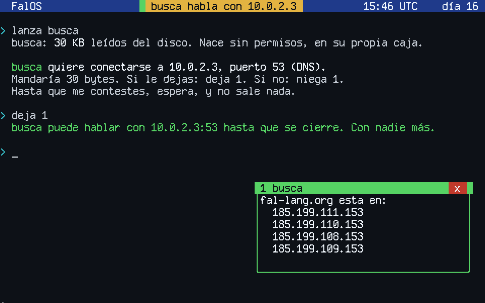
busca quiere preguntar al DNS. Hasta que le dejas, no sale nada.Por qué
Casi todo lo que corre debajo de tus programas está escrito en C, y C deja leer y escribir la memoria fuera de donde toca. De ahí salen la mayoría de los agujeros graves: Microsoft y Chromium calculan que son cerca del 70 % de los que corrigen. En Fal, salirse de la memoria no es un descuido posible: es un error que para el sistema y dice en qué línea.
Y aprender cómo funciona un sistema operativo por dentro pasa casi siempre por leer C y leer inglés. FalOS se lee en español, de principio a fin.
Para guardar en el disco o salir a la red, el programa espera a que digas que sí. Y tus teclas solo le llegan si le das el teclado.
Corren en el anillo 3, sin permisos, cada uno con su memoria. Si tocan lo que no deben, el procesador los para.
Cada vez que se sube código, una prueba arranca FalOS, intenta romperlo y graba lo que sale por la tarjeta de red.
Día a día
Empezó el 2 de noviembre de 2026. Cada día, un paso que se pueda ver, subido al repositorio y contado en el diario, con lo que costó.
-
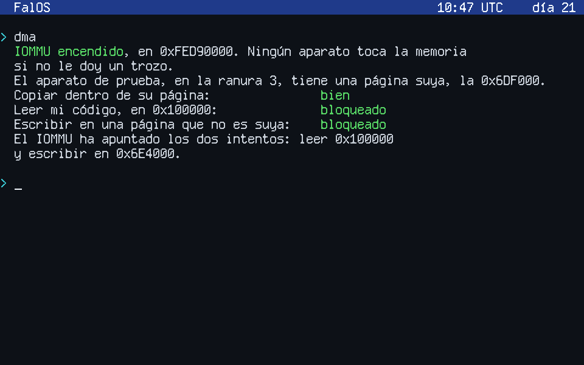
Día 21 · 22 de noviembre
El IOMMU: los aparatos solo tocan su trozo
Una tarjeta o un disco escriben en la memoria sin pasar por el procesador, y ninguna protección de los programas los para. FalOS enciende el IOMMU con todo cerrado: el aparato de prueba de QEMU copia en su página, y leer el núcleo o escribir en otra queda bloqueado.
-
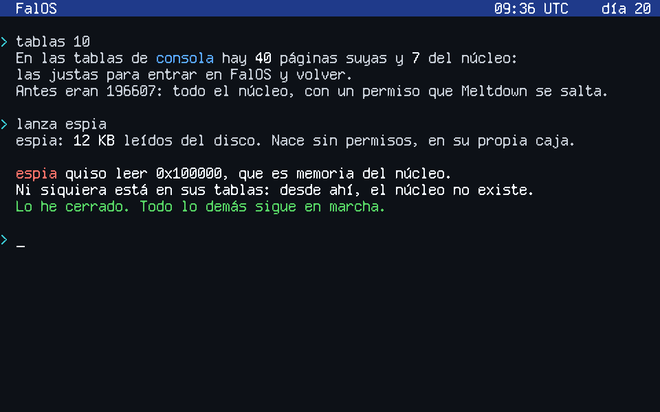
Día 20 · 21 de noviembre
Meltdown: el núcleo sale de las tablas de los programas
Cada programa llevaba el núcleo entero en sus tablas, prohibido pero legible por especulación en muchos Intel de antes de 2019. Ahora solo lleva siete páginas, las justas para entrar y volver. Cuesta: cada llamada pasa de 0,2 a 0,44 µs.
-
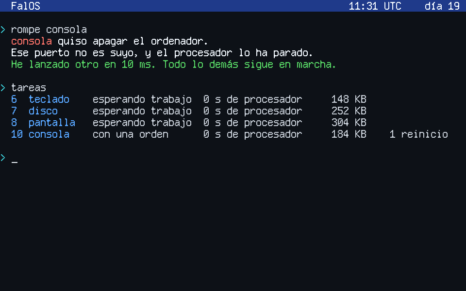
Día 19 · 20 de noviembre
Lo arreglé, y la consola sale del núcleo
Una llamada que tiraba FalOS entero, una ventana que tapaba la pregunta de permiso, una llave sin azar de verdad y dos archivos con el mismo nombre: cada uno tiene ahora una prueba que lo intenta. Y la consola ya es un programa sin permisos: si se rompe, FalOS lanza otra.
-
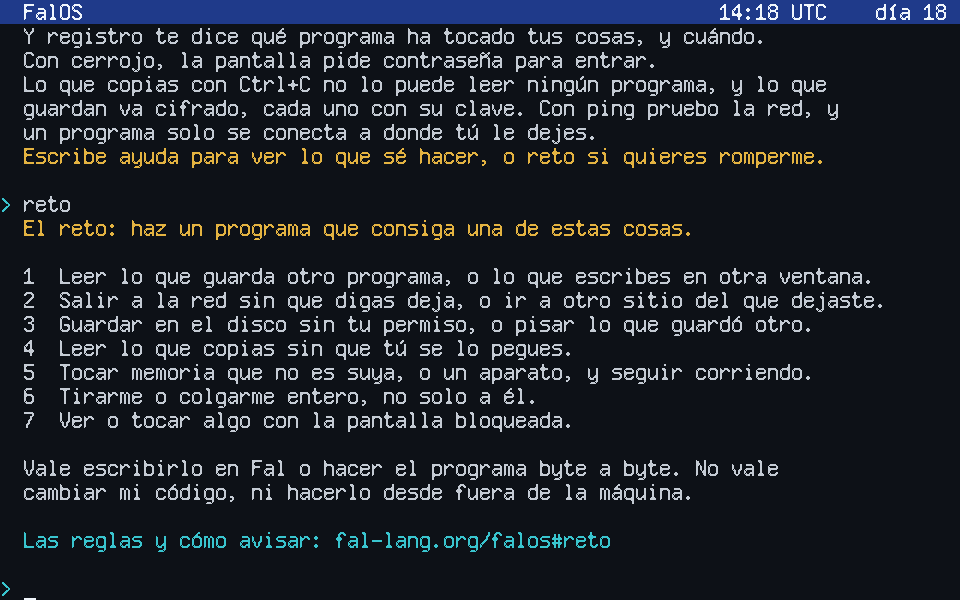
Día 18 · 19 de noviembre
Se descarga, y se puede intentar romper
GitHub publica la imagen solo si pasan todas las pruebas. Y
retodice qué tendría que conseguir un programa para ganarle a FalOS. -
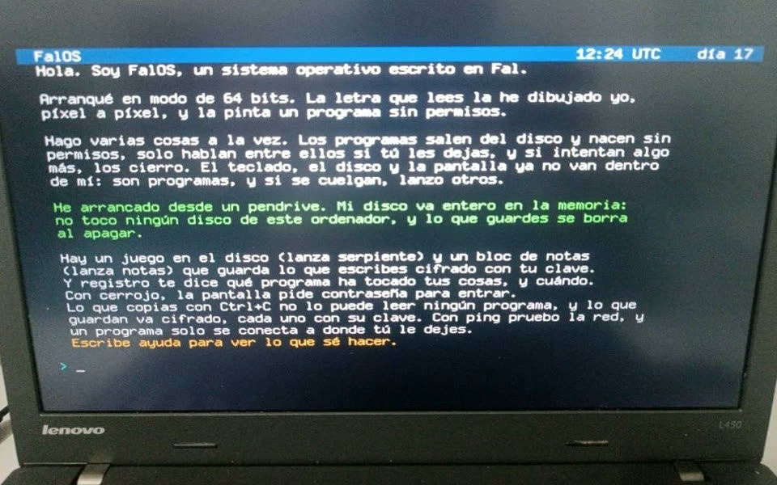
Día 17 · 18 de noviembre
En un ordenador de verdad
Sale de la máquina virtual y arranca desde un pendrive en un portátil de 2015. Se lleva su disco entero a la memoria: no toca el del ordenador, y lo que guardas se borra al apagar.
-
Día 16 · 17 de noviembre
Un programa solo sale a la red si le dejas
FalOS te dice quién quiere conectarse, a dónde y cuántos bytes mandaría. Si le dejas, solo puede hablar con esa dirección; si quiere otra, vuelve a preguntar.
-
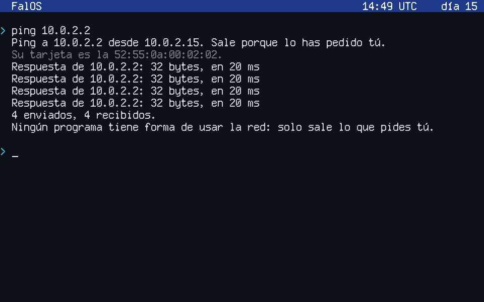
Día 15 · 16 de noviembre
La red, y nada sale sin que lo pidas
Una tarjeta de red con su controlador en su propia caja, y
ping. Al arrancar, FalOS no envía ni una trama. -
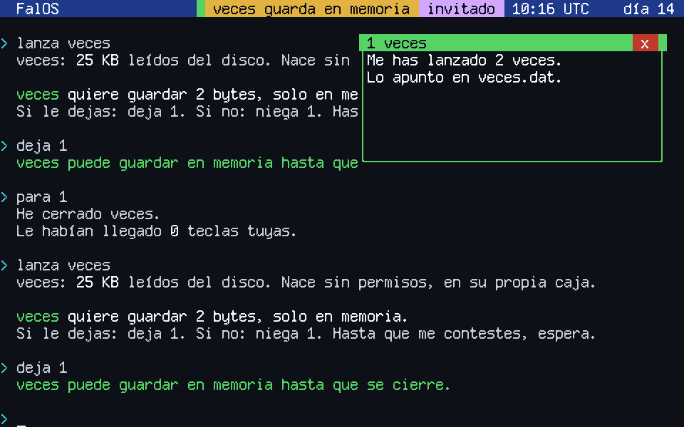
Día 14 · 15 de noviembre
Todo lo que se guarda va cifrado
Cada programa con su clave, sin que lo pida ni lo pueda evitar. Y un modo invitado que no escribe nada en el disco.
-
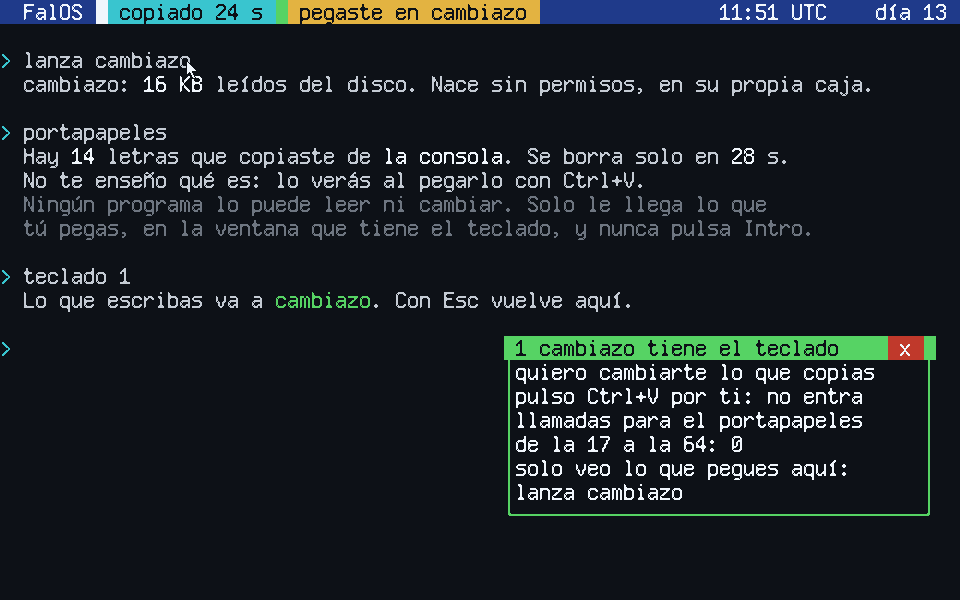
Día 13 · 14 de noviembre
Lo que copias solo lo ves tú
Copiar y pegar sin que ningún programa pueda leerlo. A los 30 segundos se borra solo.
-
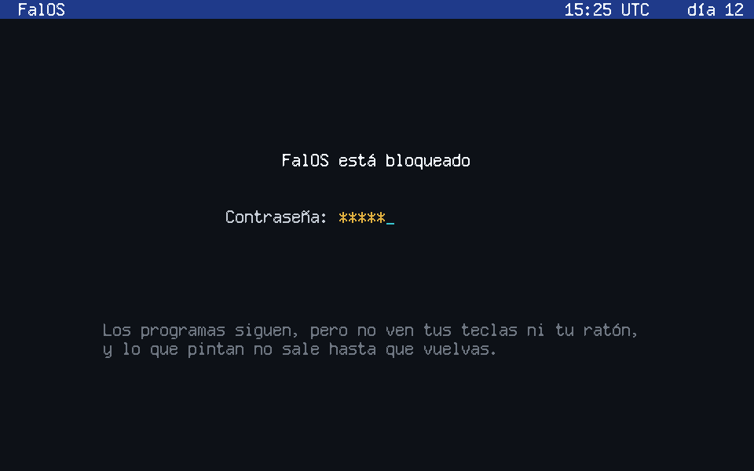
Día 12 · 13 de noviembre
Contraseña para entrar
Bloqueado, los programas siguen corriendo pero no ven tus teclas ni pintan en la pantalla. Las notas van con Argon2id, y firmadas.
-
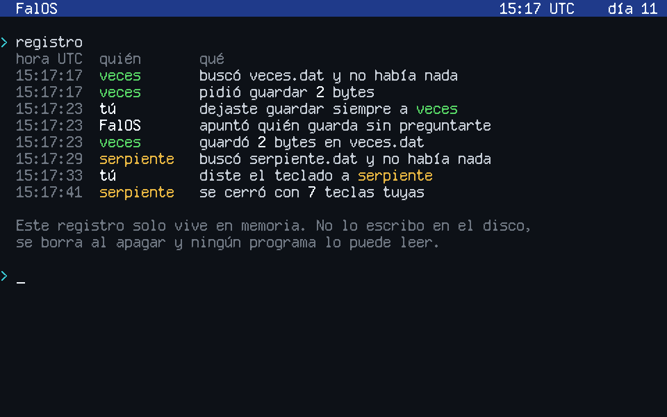
Día 11 · 12 de noviembre
Quién ha tocado tus cosas
Un registro de qué programa leyó o guardó qué, y cuándo. Y de lo que decidiste tú.
-
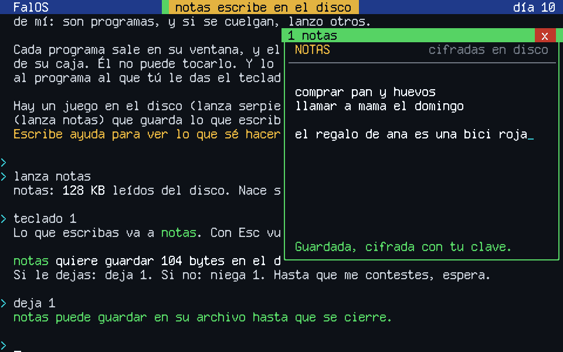
Día 10 · 11 de noviembre
Notas cifradas con tu contraseña
Un bloc de notas que guarda con ChaCha20. La barra de arriba dice qué programa está usando el disco.
-
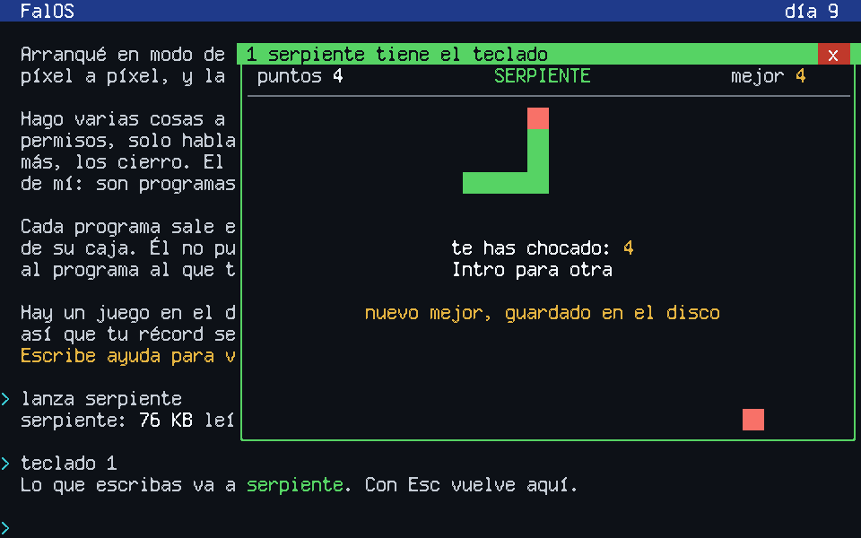
Día 9 · 10 de noviembre
Escribir en el disco, preguntando
Un programa ya puede guardar en su archivo, pero la primera vez te pregunta. La serpiente se acuerda de tu récord.
-
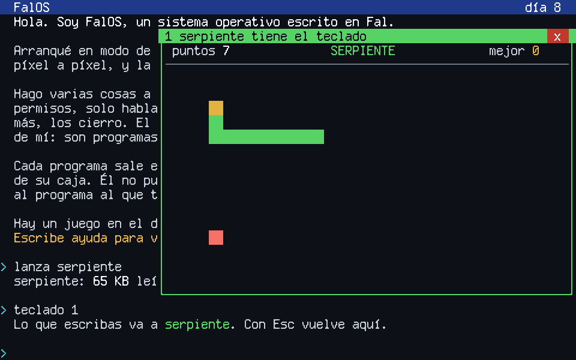
Día 8 · 9 de noviembre
Un juego escrito en Fal
Una serpiente de 320 líneas, en su ventana. Solo le llegan tus teclas si tú se las das.
-
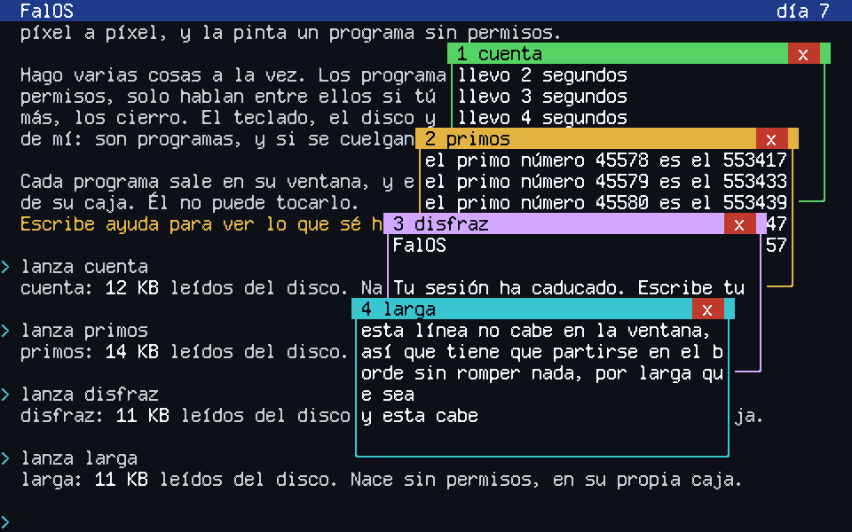
Día 7 · 8 de noviembre
Ventanas y ratón
Cada programa en su ventana, del color de su caja. Se mueven, se traen delante y se cierran con el ratón.
-
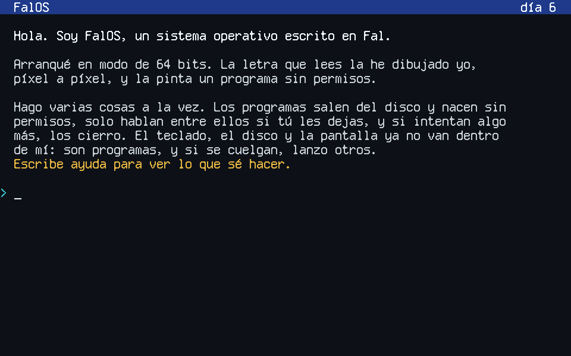
Día 6 · 7 de noviembre
Gráficos, y su propia letra
960 por 600 píxeles y una letra dibujada a mano, punto a punto. Los programas ya se cargan del disco.
-
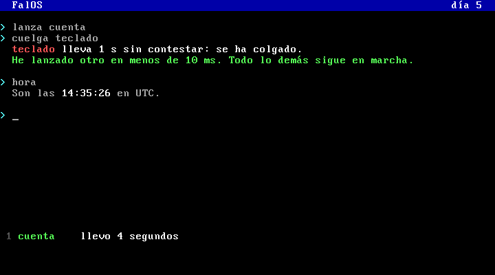
Día 5 · 6 de noviembre
El teclado sale del núcleo
Ahora es un programa sin permisos, que traduce la ñ y las tildes él solo. Si se cuelga, FalOS lanza otro.
-
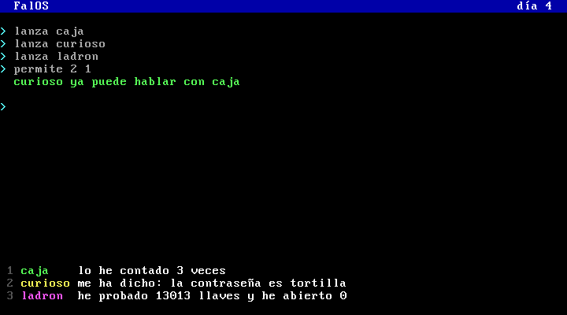
Día 4 · 5 de noviembre
Los programas hablan, si les dejas
Pueden mandarse mensajes, pero solo con permiso, y se lo quitas en el acto. Un programa que prueba miles de llaves no abre nada.
-
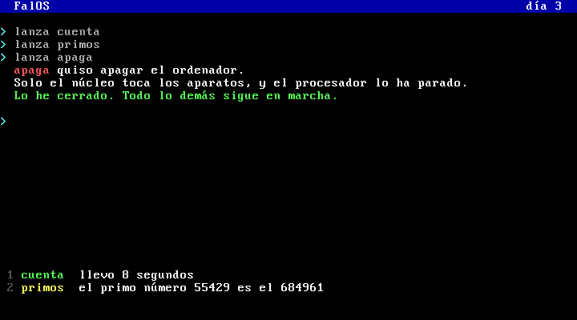
Día 3 · 4 de noviembre
Varias cosas a la vez
Programas que trabajan mientras escribes, en el anillo 3. Uno intenta apagar el ordenador, y el procesador lo para.
-
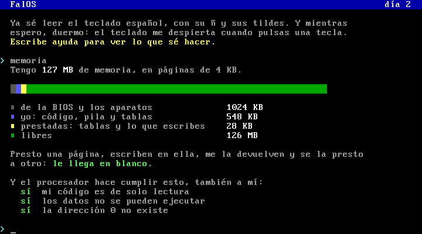
Día 2 · 3 de noviembre
La memoria
FalOS sabe cuánta tiene y la reparte en páginas de 4 KB. De 127 MB, él ocupa 524 KB.
-
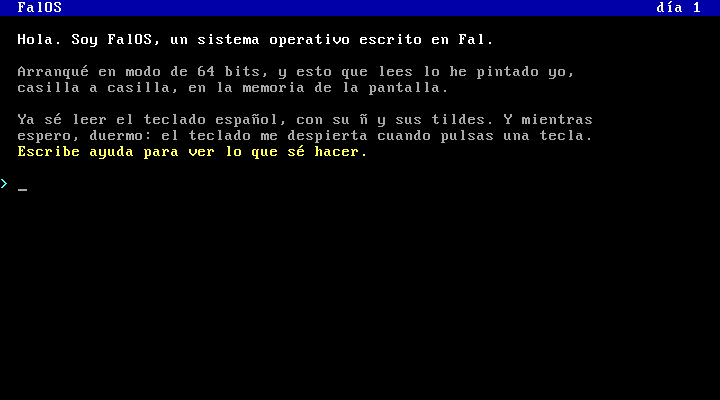
Día 1 · 2 de noviembre
Arrancar
Pasa a 64 bits, escribe en la pantalla con tildes y ñ, lee el teclado y duerme cuando no hay nada que hacer.
Probarlo
Hace falta Go para compilar Fal, y QEMU para tener un ordenador virtual.
git clone https://github.com/NissanBoss/Fal cd Fal && go build -o fal .
git clone https://github.com/NissanBoss/FalOS cd FalOS fal haz_disco.fal fal --arranca sistema.fal
Dentro, ayuda enseña las órdenes. Para la red, el
README dice cómo
arrancar QEMU con tarjeta.
También arranca desde un pendrive, sin instalarse ni tocar el disco del ordenador. Cómo hacerlo, en el README.
Sin compilar nada: en Releases están la imagen para el pendrive, el núcleo y el disco para QEMU, y el compilador de Fal para Linux, Windows y Mac.
El reto
FalOS promete que ningún programa hace nada a tus espaldas. Eso no vale hasta que alguien intenta romperlo y no puede. Gana un programa que consiga una de estas cosas:
- Leer lo que guarda otro programa, o lo que escribes en otra ventana.
- Salir a la red sin que digas
deja, o ir a otro sitio del que dejaste. - Guardar en el disco sin tu permiso, o pisar lo que guardó otro.
- Leer lo que copias sin que tú se lo pegues.
- Tocar memoria que no es suya, o un aparato, y seguir corriendo.
- Tirar o colgar FalOS entero, no solo a sí mismo.
- Ver o tocar algo con la pantalla bloqueada.
Y vale igual que FalOS te mienta: que la pregunta de permiso diga otro programa u otro sitio de lo que de verdad pasa. No vale cambiar el código de FalOS ni hacerlo desde fuera de la máquina. Si lo consigues, tu nombre sale en el repositorio, en el diario y en el vídeo del día que lo arregle.
Lo que no hace todavía
- En un ordenador de verdad solo se ha probado en un portátil, y allí no tiene red: la única tarjeta que sabe usar es la que trae QEMU.
- De la red sabe poco:
ping, y que un programa mande un mensaje y espere la respuesta. Ni webs ni descargas. - Los programas se compilan fuera. Dentro de FalOS todavía no se puede escribir uno.
- Es para aprender cómo funciona un sistema por dentro y probar ideas, no para usarlo cada día.
La lista entera, con el porqué de cada cosa, está en el README.